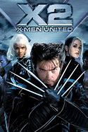

|
1.
X-Men
(2000)
1hr 44min | Sci-Fi, Action, Adventure
 7.4/10  64
Official Trailer
|
In a world where both Mutants (evolved super-powered humans) and Humans fear each other. Mutants are discriminated against, two groups form for an inevitable clash: the supremacist Brotherhood, and the pacifist X-Men. Marie, better known as Rogue, runs away from home and hitches a ride with another mutant, known as Logan, a.k.a. Wolverine. Professor Charles Xavier, who owns a school for young mutants, sends Storm and Cyclops to bring them back before it is too late. Magneto, who believes a war is approaching, has an evil plan in mind, and needs young Rogue to help him. |
Patrick Stewart
Hugh Jackman
Ian McKellen |
Bryan Singer |
|  |
2.
X2: X-Men United
(2003)
2hr 14min | Sci-Fi, Action, Adventure
7.4/10
68
Official Trailer
|
Several months have passed since the X-Men defeated Magneto and imprisoned him in a seemingly impregnable plastic chamber. One day Nightcrawler, a mutant infiltrates the White House and attempts to assassinate the President, setting off a chain reaction of anti-mutant measures by the government. Meanwhile, Logan is trying to discover his past. As scientist named William Stryker discovers Professor X's secret school and Cerebro, Magneto's partner, Mystique, is planning to break her leader out of prison. But when Professor X's school is attacked by Stryker's forces. Logan, Rogue, Iceman, and a few are lucky to escape. Those who remain meet in Boston, where they form an uneasy alliance with Magneto to stop Stryker and rescue Professor X. |
Patrick Stewart
Hugh Jackman
Halle Berry |
Bryan Singer |
 |
3.
X-Men: The Last Stand
(2006)
1hr 44min | Sci-Fi, Action, Adventure
6.7/10
58
Official Trailer
|
The human government develops a cure for mutations. Some mutants like the idea of a "cure". Many mutants find that there shouldn't be a "cure". Magneto, who still believes a war is coming, recruits a large team of mutants to take down Warren Worthington II and his "cure". Might seem easy for the X-Men to stop, but Magneto has a big advantage, which Wolverine doesn't have. Jean Gray becomes a darker uncontrollable persona called the Phoenix and allies with Magneto. The Dark Phoenix has woken within her, which has the ability to destroy anything in her way, even if that "anything" is an X-Man. These cause escalation into an all-out battle for the X-Men. |
Patrick Stewart
Hugh Jackman
Halle Berry |
Brett Ratner |
|
4.
X-Men Origins: Wolverine
(2009)
1hr 47min | Sci-Fi, Action, Adventure
6.6/10
40
Official Trailer
|
Two mutant brothers, Logan and Victor, born two hundred years ago, suffer childhood trauma and have only each other to depend on. Basically, they're fighters and killers, living from war to war throughout U.S. history. In modern times, a U.S. Colonel, Stryker, recruits them and other mutants as commandos. Logan quits and becomes a logger, falling in love with a local teacher. When Logan refuses to rejoin Stryker's crew, the Colonel sends the murderous Victor. Logan now wants revenge. |
Hugh Jackman
Ryan Reynolds
Liev Schreiber |
Gavin Hood |
|
5.
X-Men: First Class
(2011)
2hr 11min | Sci-Fi, Action, Adventure
7.7/10
65
Official Trailer
|
Before Charles Xavier and Erik Lensherr took the names Professor X and Magneto, they were two young men discovering their powers for the first time. Before they were archenemies, they were closest of friends. In the 1960s, they work together to find others like them to stop the greatest threat the world has ever known. In the process, Erik's vengeful pursuit of an ambitious mutant who ruined his life causes a schism to divide them, which began the eternal war between Magneto's Brotherhood and Professor X's X-MEN. |
James McAvoy
Michael Fassbender
Jennifer Lawrence |
Matthew Vaughn |
|
6.
The Wolverine
(2013)
2hr 6min | Sci-Fi, Action, Adventure
6.7/10
61
Official Trailer
|
Wolverine comes to Japan to meet an old friend whose life he saved years ago. Wolverine is out of his depth in an unknown world as he faces his ultimate nemesis in a life-or-death battle that will leave him forever changed. Vulnerable for the first time and pushed to his physical and emotional limits, he confronts not only lethal samurai steel but also his inner struggle against his own near-immortality, emerging more powerful than we have ever seen him before. In Japan, he gets embroiled in a conspiracy involving yakuza and mutants. |
Hugh Jackman
Will Yun Lee
Tao Okamoto |
James Mangold |
|
7.
X-Men: Days of Future Past
(2014)
2hr 12min | Sci-Fi, Action, Adventure
7.9/10
75
Official Trailer
|
In the future, the mutants and the humans who help them are slaughtered by powerful robots named Sentinels. Professor Xavier, Wolverine, Magneto, Storm, Kitty Pryde, and her friends meet at a monastery in China and Xavier explains that the invincible Sentinels were created using the DNA of Mystique that was captured in 1973 when she tried to assassinate their creator Dr. Bolivar Trask. Xavier tells that their only chance is return to 1973 using Pryde's ability to join Charles Xavier and Erik Lehnsherr to convince Mystique to give up her intention. However, only Wolverine can withstand the damages of the time travel. Will he succeed in stopping Mystique and the Sentinel Program, and save the mutants and their human friends from annihilation? |
Patrick Stewart
Hugh Jackman
Ian McKellen |
Bryan Singer |
 |
8.
Deadpool
(2016)
1hr 48min | Action, Adventure, Comedy
8/10
65
Official Trailer
|
This is the origin story of former Special Forces operative turned mercenary Wade Wilson, who after being subjected to a rogue experiment that leaves him with accelerated healing powers (Immortal) but Ugly, adopts the alter ego Deadpool. Armed with his new abilities and a dark, twisted sense of humor, Deadpool hunts down the man who nearly destroyed his life. |
Ryan Reynolds
Morena Baccarin
T.J. Miller |
Tim Miller |
|
9.
X-Men: Apocalypse
(2016)
2hr 24min | Sci-Fi, Action, Adventure
6.9/10
52
Official Trailer
|
Since the dawn of civilization, En Sabah Nur, was worshiped as a god. Apocalypse, the first and most powerful mutant from Marvel's X-Men universe, amassed the powers of many other mutants, becoming immortal and invincible. Upon awakening after thousands of years, he is disillusioned with the world as he finds it and recruits a team of powerful mutants, including a disheartened Magneto, to cleanse mankind and create a new world order, over which he will reign. As the fate of the Earth hangs in the balance, Raven with the help of Professor X must lead a team of young X-Men to stop their greatest nemesis and save mankind from complete destruction. |
James McAvoy
Michael Fassbender
Jennifer Lawrence |
Bryan Singer |
|
10.
Logan
(2017)
2hr 17min | Sci-Fi, Action, Drama
8.1/10
77
Official Trailer
|
In 2029 the mutant population has shrunken significantly due to genetically modified plants designed to reduce mutant powers and the X-Men have disbanded. Logan, whose power to self-heal is dwindling, has surrendered himself to alcohol and now earns a living as a chauffeur. He takes care of the ailing old Professor X whom he keeps hidden away. One day, a female stranger asks Logan to drive a girl named Laura to the Canadian border. At first he refuses, but the Professor has been waiting for a long time for her to appear. Laura possesses an extraordinary fighting prowess and is in many ways like Wolverine. She is pursued by sinister figures working for a powerful corporation; this is because they made her, with Logan's DNA. A decrepit Logan is forced to ask himself if he can or even wants to put his remaining powers to good use. It would appear that in the near-future, the times in which they were able put the world to rights with razor sharp claws and telepathic powers are now over. |
Hugh Jackman
Patrick Stewart
Dafne Keen
|
James Mangold |
|
11.
Deadpool 2
(2018)
1hr 59min | Comedy, Action, Adventure
7.7/10
66
Official Trailer
|
After losing Vanessa (Morena Baccarin), the love of his life, 4th-wall breaking mercenary Wade Wilson aka Deadpool (Ryan Reynolds) must assemble a team and protect a young, full-figured mutant Russell Collins aka Firefist (Julian Dennison) from Cable (Josh Brolin), a no-nonsense, dangerous cyborg from the future, and must also learn the most important lesson of all: to be part of a family again. |
Ryan Reynolds
Josh Brolin
Morena Baccarin |
David Leitch |
|
12.
X-Men: Dark Phoenix
(2019)
1hr 53min | Sci-Fi, Action, Adventure
5.8/10
43
Official Trailer
|
When a mission goes wrong, Jean Grey is exposed to a dark and ancient power. This power has destroyed everything it comes in contact with, until her. Now that this power is becoming unstable. She begins to develop the incredible powers that corrupt and turn her into a Dark Phoenix. She releases it with destruction and anger. Now this foreign power is consuming her, and the world is threatened. The X-Men have to face an important truth: they must save either the world, or their friend who threatens it. |
Sophie Turner
James McAvoy
Michael Fassbender
Jennifer Lawrence |
Simon Kinberg |
|
13.
The New Mutants
(2020)
1hr 34min | Sci-Fi, Action, Horror
5.5/10
43
Official Trailer
|
After a near-death experience during a strange tornado, Danielle Moonstar awakens in an abandoned research facility run by the mysterious Dr Cecilia Reyes. There, Dr Reyes introduces Dani to four other equally uncommon teenagers: Illyana Rasputin, Rahne Sinclair, Sam Guthrie, and Roberto da Costa, who wants to keep them safe and sound until they learn how to be in full control of their extraordinary abilities. However, even though the exceptional team of traumatised inmates believes that they're being treated and cared for, before long, they all start to experience horrifying hallucinations. But, this institution was supposed to be a safe place. Are they patients or prisoners? |
Maisie Williams
Anya Taylor-Joy
Charlie Heaton
Alice Braga |
Josh Boone |